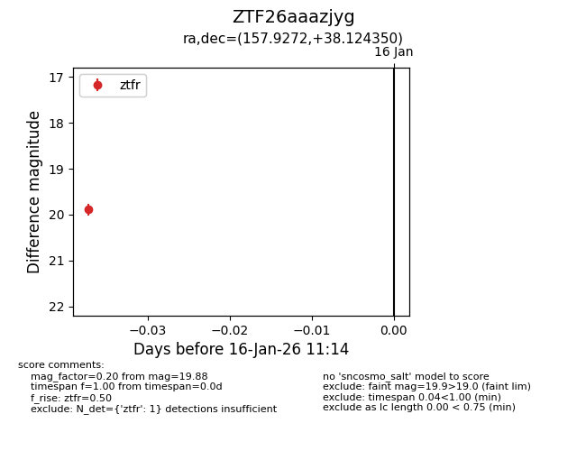
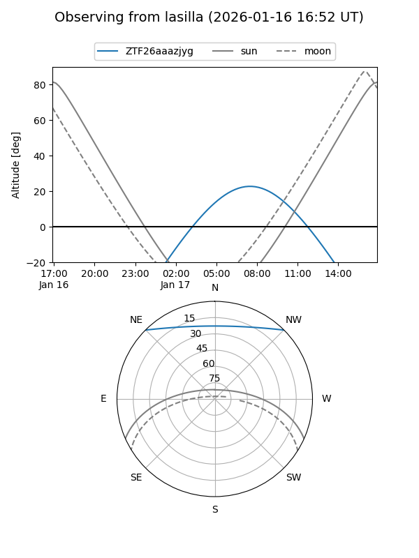
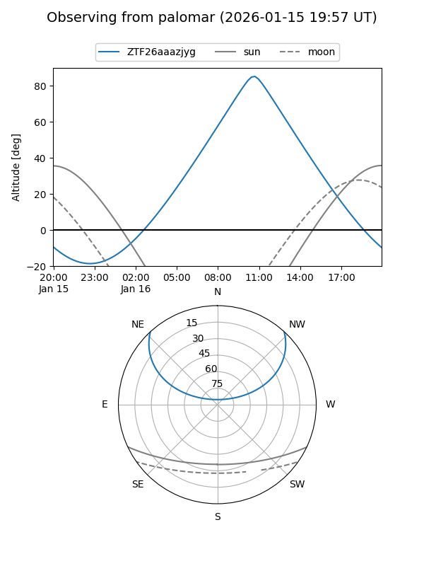

ZTF26aaazjyg
Target ZTF26aaazjyg at 2026-01-16 11:15
Aliases and brokers:
FINK: link
Lasair: link
ALeRCE: link
alt names
ZTF26aaazjyg (ztf,fink_ztf)
Coordinates:
equatorial (ra, dec) = 157.9272,+38.12435
equatorial (HMS+DMS) = 10:31:42.53,+38:07:27.66
galactic (l, b) = (183.3822,+58.81475)
Flags:
Photometry:
last ztfr=19.88
1 ztfr detections
Lightcurve

Visibility


Additional plots